초록
모델 프리(model-free) 강화학습에서 흔히 믿어지는 사실 중 하나는 정책의 매개변수 공간에서 무작위 탐색을 수행하는 방법이 행동 공간을 탐색하는 방법보다 샘플 복잡도 측면에서 현저히 떨어진다는 것이다. 본 논문에서는 연속 제어 문제를 위한 정적 선형 정책을 학습시키는 무작위 탐색 방법을 도입하여 이러한 믿음이 잘못되었음을 밝히고, 벤치마크 MuJoCo 보행 작업에서 최첨단(state-of-the-art) 샘플 효율성에 필적하는 성능을 보여준다. 또한 우리의 방법은 시스템 동역학을 모를 때, 제어 이론의 고전적 문제인 선형 이차 조절기(Linear Quadratic Regulator, LQR)의 까다로운 인스턴스에 대해서도 거의 최적에 가까운 제어기를 찾아낸다. 계산적으로 우리의 무작위 탐색 알고리즘은 이러한 벤치마크에서 가장 빠른 경쟁 모델 프리 방법들보다 최소 배 더 효율적이다. 우리는 이러한 계산적 효율성을 활용하여 각 벤치마크 작업에 대해 수백 개의 무작위 시드와 다양한 하이퍼파라미터 설정에 걸쳐 우리 방법의 성능을 평가한다. 시뮬레이션 결과, 이러한 벤치마크 작업에서 성능의 변동성이 매우 높게 나타났으며, 이는 흔히 사용되는 샘플 효율성 추정치가 강화학습 알고리즘의 성능을 적절히 평가하지 못하고 있음을 시사한다.
1 서론
모델 프리 강화학습(RL)은 시스템 동역학 모델 없이도 동적 시스템을 제어할 수 있는 즉각적인 해결책을 제공하는 것을 목표로 한다. 이러한 방법들은 비디오 게임과 바둑 [20, 33] 같은 게임에서 인간 플레이어를 능가하는 RL 에이전트를 성공적으로 만들어냈다. 이러한 결과는 인상적이지만, 연구용 데모를 제외하고는 모델 프리 방법이 실제 물리 시스템을 제어하는 데 아직 성공적으로 배포되지 못했다. 물리 시스템 제어에 모델 프리 RL 방법을 도입하는 것을 가로막는 몇 가지 요인이 있다. 즉, 합리적인 성능을 달성하는 데 너무 많은 데이터가 필요하고, 끊임없이 늘어나는 RL 방법의 종류로 인해 특정 작업에 가장 적합한 방법을 선택하기 어려우며, 많은 후보 알고리즘들이 구현 및 배포하기 어렵다는 점이다 [12].
불행히도, 현재 RL 연구의 트렌드는 이러한 장애물들을 서로 상충하게 만들고 있다. 샘플 효율적인(즉, 데이터가 적게 필요한) 방법을 찾으려는 과정에서 전반적인 경향은 점점 더 복잡한 방법을 개발하는 방향으로 흘러갔다. 이러한 복잡성의 증가는 재현성 위기로 이어졌다. 최근 연구들에 따르면 많은 RL 방법이 하이퍼파라미터, 무작위 시드, 심지어 동일한 알고리즘의 서로 다른 구현체의 변화에도 견고하지 못함(robust)을 보여준다 [12, 13]. 이러한 취약성을 가진 알고리즘은 상당한 단순화와 강건화 없이는 핵심 임무 제어 시스템에 통합될 수 없다.
더욱이, 새로운 RL 방법을 비디오 게임이나 시뮬레이션된 연속 제어 문제에 적용하고 소수의 독립적인 실험(즉, 10개 미만의 무작위 시드)에 대해 성능을 측정하여 평가하고 비교하는 것이 일반적인 관행이다 [9, 10, 11, 18, 21, 23, 26, 27, 28, 29, 30, 31, 32, 36, 37]. 가장 인기 있는 연속 제어 벤치마크는 MuJoCo 보행 작업 [3, 34]이며, 그 중 Humanoid 모델은 "최첨단 RL 기술로 해결할 수 있는 가장 도전적인 연속 제어 문제 중 하나 [28]"로 여겨진다. 원칙적으로는 비디오 게임과 시뮬레이션 제어 문제를 새로운 아이디어의 베타 테스트에 사용할 수 있지만, 더 복잡한 솔루션으로 나아가기 전에 단순한 베이스라인이 확립되고 철저히 평가되어야 한다.
이를 위해 우리는 표준 벤치마크를 해결할 수 있는 가장 단순한 모델 프리 RL 방법을 결정하고자 한다. 최근 RL을 단순화하기 위해 두 가지 서로 다른 방향이 제안되었다. Salimans et al. [28]은 진화 전략(Evolution Strategies, ES)이라 불리는 도함수 없는 정책 최적화(derivative-free policy optimization) 방법을 도입했다. 저자들은 여러 RL 작업에 대해 자신들의 방법이 쉽게 병렬화되어 다른 방법보다 빠르게 정책을 학습시킬 수 있음을 보여주었다. Salimans et al. [28]이 제안한 방법은 이전에 제안된 방법들보다 단순하지만, 몇 가지 복잡한 알고리즘 요소를 채택하고 있으며 이에 대해서는 섹션 3.4에서 논의한다. 모델 프리 RL의 두 번째 단순화로서, Rajeswaran et al. [27]은 연속 제어 문제를 해결하는 데 복잡한 신경망 정책이 필요하지 않음을 보여주며, 자연 정책 경사(natural policy gradient)를 통해 선형 정책을 학습시켜 MuJoCo 보행 작업에서 경쟁력 있는 성능을 얻을 수 있음을 보였다. 본 연구에서는 Salimans et al. [28]와 Rajeswaran et al. [27]의 연구 아이디어를 결합하여 선형 정책을 학습시키기 위한 도함수 없는 최적화 알고리즘인 가장 단순한 모델 프리 RL 방법을 얻는다. 우리는 단순한 무작위 탐색 방법이 MuJoCo 보행 벤치마크에서 최첨단 샘플 효율성에 필적하거나 이를 능가할 수 있음을 입증한다. 더욱이, 우리의 방법은 가장 빠른 경쟁 방법인 ES보다 계산적으로 최소 배 더 효율적이다. 우리의 발견은 행동 공간에서의 탐색에 의존하는 정책 경사 기법이 유한 차분(finite-differences)에 기반한 방법보다 샘플 효율적이라는 일반적인 믿음과 상반된다 [25, 26]. 구체적으로 우리의 기여는 다음과 같다:
-
•
섹션 3에서는 도함수 없는 최적화 문제를 해결하기 위한 고전적이고 기본적인 무작위 탐색 알고리즘을 제시한다. 연속 제어에 적용하기 위해, 우리는 기본 무작위 탐색 방법에 세 가지 단순한 기능을 보강한다. 첫째, 각 업데이트 단계를 해당 업데이트 단계를 계산하기 위해 수집된 보상의 표준편차로 스케일링한다. 둘째, 시스템의 상태(state)를 온라인으로 추정된 평균과 표준편차로 정규화한다. 셋째, 업데이트 단계 계산에서 보상 개선이 가장 적은 방향들을 배제한다. 우리는 이 방법을 증강 무작위 탐색111ARS의 구현체는 https://github.com/modestyachts/ARS에서 찾을 수 있다.(Augmented Random Search, ARS)이라 부른다.
-
•
섹션 4.2에서는 벤치마크 MuJoCo 보행 작업에서 ARS의 성능을 평가한다. 우리의 방법은 모든 MuJoCo 작업에서 높은 보상을 달성하는 정적 선형 정책을 학습할 수 있다. 즉, 우리의 제어 행동은 현재 상태만의 선형 사상(linear map)이다. 신경망을 전혀 사용하지 않음에도 불구하고 여전히 일관되게 최첨단 성능을 달성한다. 예를 들어, Humanoid 모델의 경우 ARS는 문헌에 보고된 가장 높은 보상인 이상의 평균 보상을 달성하는 선형 정책을 찾아낸다.
-
•
섹션 4.4에서는 Humanoid-v1 작업을 위한 정책을 학습하는 데 ARS가 필요로 하는 시간과 계산 자원을 보고한다. 평균 보상 이상에 도달하는 데 필요한 시간을 측정하며, 결과는 100개의 무작위 시드에 대해 보고된다. 개의 CPU가 장착된 단일 머신에서 ARS는 개의 무작위 시드에 대해 최대 분이 소요되고, 개의 무작위 시드에 대해 최대 분이 소요된다. 대중적인 신뢰 영역 정책 최적화(Trust Region Policy Optimization, TRPO) 방법 [28, 29]을 사용하여 현대적인 하드웨어에서 동일한 보상 임계값에 도달하도록 Humanoid-v1 작업의 정책을 학습시키는 데는 약 하루가 걸리며, 개의 CPU [28]로 병렬화된 ES를 사용하면 약 분이 걸린다. 따라서 우리의 방법은 가장 빠른 경쟁 방법인 ES보다 계산적으로 최소 배 더 효율적이다.
-
•
우리의 방법이 기존 접근법보다 효율적이기 때문에, 우리는 수많은 무작위 시드에 걸쳐 우리 방법의 분산을 탐색할 수 있다. RL 알고리즘은 큰 학습 분산을 보이기 때문에 소수의 무작위 시드에 대한 평가는 성능을 정확하게 포착하지 못한다. Henderson et al. [12]과 Islam et al. [13]은 이미 많은 무작위 시드에 걸쳐 RL 알고리즘의 성능을 측정하는 것의 중요성과 하이퍼파라미터 선택에 대한 RL 방법의 민감성에 대해 논의한 바 있다. 우리 방법을 더 철저히 평가하기 위해, 우리는 100개의 무작위 시드에 대해 ARS의 성능을 측정하고 하이퍼파라미터 선택에 대한 민감도도 평가했다. ARS는 하이퍼파라미터와 무작위 시드가 변경될 때 대부분의 경우 MuJoCo 보행 작업을 위한 정책을 성공적으로 학습시키지만, 여전히 큰 분산을 보이며 학습된 정책이 항상 일관되게 높은 보상을 산출하지는 않는다는 점을 자주 발견한다.
-
•
연속 제어를 위한 RL 평가를 단순화하고 간소화하기 위해, 확장 가능하고 재현 가능한 베이스라인을 더 많이 추가하는 것이 중요하다고 주장한다. 섹션 4.3에서는 동역학을 모르는 선형 이차 조절기(LQR)를 이러한 벤치마크로 사용할 것을 제안한다. 우리는 이 문제의 까다로운 인스턴스에 대해 100개의 무작위 시드에서 ARS의 성능을 평가한다. 모델 기반(model-based) 방법만큼 샘플 효율적이지는 않지만, ARS는 고려된 LQR 인스턴스에 대해 거의 최적에 가까운 솔루션을 찾아낸다.
1.1 관련 연구
최근 표준 벤치마크 제품군이 채택됨에 따라, 많은 최근 연구들이 시뮬레이션 환경 내에서 연속 제어를 위해 RL 방법을 적용해 왔다. Levine and Koltun [17]은 학습 기반 제어를 위한 테스트베드로 MuJoCo를 최초로 사용한 이들 중 하나로, 특수 목적의 기술 없이도 복잡한 시뮬레이터에서 보행을 달성할 수 있었다. 그 이후로 이 시뮬레이션 엔진은 RL 기술을 비교하기 위해 다양한 연구자들에 의해 서로 다른 맥락에서 사용되어 왔다. 우리는 여기서 이러한 접근법 중 다수를 나열하며, 아래에 나열된 접근법들의 이점과 비교가 종종 하이퍼파라미터 선택 방법이 불분명한 상태에서 소수의 무작위 시드 세트에 대해 평가되었음을 강조한다. Henderson et al. [12]과 Islam et al. [13]는 이러한 방법론이 무작위 시드 선택과 하이퍼파라미터 선택 모두에 민감한 RL 방법의 성능을 정확하게 포착하지 못한다고 지적했다.
Mnih et al. [21]은 정책 경사 알고리즘의 분산 감소로 인기 있는 액터-크리틱(actor-critic) 방법이 Atari 비디오 게임 및 MuJoCo 모델의 정책을 빠르게 학습하기 위해 비동기식으로 병렬화될 수 있음을 보여주었다. 이에 앞서, Schulman et al. [30]은 어드밴티지를 추정하기 위한 일반화된 어드밴티지 추정(Generalized Advantage Estimation, GAE) 방법을 도입하여 이전 방법들보다 편향이 적으면서 분산을 감소시켰다.
대중적인 신뢰 영역 정책 최적화(TRPO) 알고리즘은 자연 경사 방법과 관련이 있다. Schulman et al. [29]에 의해 도입된 TRPO는 각 반복마다 KL-발산 패널티로 정규화된 근사 평균 보상 목적 함수를 최대화한다. 더 확장 가능한 신뢰 영역 방법으로서, Wu et al. [37]은 크로네커 곱 신뢰 영역(Kronecker-factor trust regions, ACKTR)을 사용하는 액터 크리틱 방법을 제안했다. 보다 최근에, Schulman et al. [31]는 구현하기 더 쉽고 샘플 복잡도가 더 우수한 TRPO의 후속작인 근접 정책 최적화(Proximal Policy Optimization, PPO)를 도입했다. 장애물이 있는 보행 작업을 위한 정책을 학습시키기 위해, Heess et al. [11]은 PPO의 분산 버전을 제안했다.
샘플 효율성을 높이기 위한 다른 방향으로, Q-러닝(Q-learning)과 같은 오프-폴리시(off-policy) 방법들은 데이터 생성에 사용된 정책과 관계없이 시스템으로부터 수집된 모든 데이터를 사용하도록 설계되었다. Silver et al. [32]은 Degris et al. [5]의 연구를 확장하여, 이러한 아이디어를 액터-크리틱(actor-critic) 프레임워크와 결합함으로써 탐색적 정책에 의존하여 결정론적 정책을 학습하는 방법을 제안했다. 이후 Lillicrap et al. [18]는 이 방법을 심층 Q-러닝(deep Q-learning)의 발전 사항과 통합하여 심층 결정론적 정책 그래디언트(Deep Deterministic Policy Gradient, DDPG) 방법을 도출했다.
그래디언트 추정의 높은 분산만이 정책 그래디언트 방법이 극복해야 할 유일한 장애물은 아니다. 강화학습(RL)에서 발생하는 최적화 문제는 고도의 비볼록성(non-convex)을 띠므로, 많은 방법이 서브옵티멀(suboptimal)한 국소 최적해(local optima)에 빠지게 된다. 이 문제를 해결하기 위해 Haarnoja et al. [9]은 엔트로피 최대화를 통해 다중 모드 확률적 정책(multi-modal stochastic policies)을 학습하는 소프트 Q-러닝(Soft Q-learning) 알고리즘을 제안하여, 다중 모드 보상 환경에서 더 나은 탐색을 가능하게 했다. 최근 Haarnoja et al. [10]은 이 아이디어를 액터-크리틱 프레임워크와 결합하여, 액터가 기대 보상과 확률적 정책의 엔트로피를 모두 최대화하는 것을 목표로 하는 오프-폴리시 액터-크리틱 방법인 소프트 액터-크리틱(Soft Actor-Critic, SAC) 알고리즘을 제안했다. 이와는 다른 방향으로, Rajeswaran et al. [27]는 탐색 공간을 단순화하는 방법으로 선형 정책(linear policies)을 사용했다. 이들은 정책의 매개변수 공간의 메트릭에 적합화된 정책 그래디언트인 자연 그래디언트(natural gradients) [15]를 사용하여 MuJoCo 보행(locomotion) 태스크를 위한 선형 정책을 학습시켰다.
이러한 모든 방법이 행동 공간(action space)에서의 탐색에 의존하는 반면, 정책의 매개변수 공간(parameter space)에서 탐색을 수행하는 모델 프리(model-free) RL 방법들도 존재한다. 모델 프리 RL을 위한 전통적인 유한 차분(finite difference) 그래디언트 추정은 정책 가중치의 좌표 정렬 교란(coordinate aligned perturbations)과 측정값 취합을 위한 선형 회귀를 사용한다 [25]. 우리의 방법은 균일하게 분포된 방향을 따른 유한 차분에 기초하며, 이는 Nesterov and Spokoiny [24]이 분석한 무도함수 최적화(derivative-free optimization) 방법에서 영감을 받았고 에볼루션 스트래티지(Evolution Strategies) 알고리즘 [28]과 유사하다. 무도함수 최적화를 위한 무작위 탐색(random search) 방법의 수렴성은 여러 유형의 볼록 최적화(convex optimization)에 대해 규명되어 왔다 [1, 2, 14, 24]. Jamieson et al. [14]는 무도함수 볼록 최적화에 대한 정보 이론적 하한을 제시하고, 좌표 기반 무작위 탐색 방법이 차원에 대해 거의 최적인 의존성을 가지며 이 하한을 달성함을 보여준다.
2 문제 설정
강화학습에서 문제를 해결하려면 주어진 태스크에서 평균 보상을 최대화하는 것을 목표로 동적 시스템을 제어하기 위한 정책을 찾아야 한다. 이러한 문제는 추상적으로 다음과 같이 정식화할 수 있다.
| (1) |
여기서 은 정책 을 매개변수화한다. 무작위 변수 는 환경의 무작위성, 즉 무작위 초기 상태와 확률적 전이를 인코딩한다. 값 은 시스템에서 생성된 하나의 궤적(trajectory)에서 정책 에 의해 달성된 보상이다. 일반적으로는 확률적 정책 을 사용할 수 있지만, 우리가 제안하는 방법은 결정론적 정책을 사용한다.
2.1 기본 무작위 탐색
문제 정식화(1)는 정책 매개변수 에 대해 직접 최적화함으로써 보상을 최적화하는 것을 목표로 함에 유의하라. 우리는 행동 공간이 아닌 매개변수 공간에서 탐색하는 방법을 고려한다. 이러한 선택은 RL 학습을 노이즈가 있는 함수 평가를 동반하는 무도함수 최적화와 동일하게 만든다. 무도함수 최적화를 위한 가장 단순하고 오래된 최적화 방법 중 하나는 무작위 탐색(random search) [19]이다. 무작위 탐색은 매개변수 공간의 구(sphere) 위에서 균일하게 무작위로 방향을 선택한 다음, 이 방향을 따라 함수를 최적화한다.
무작위 탐색의 원시적인 형태는 단순히 무작위 방향을 따라 유한 차분 근사치를 계산한 다음, 라인 서치(line search)를 사용하지 않고 이 방향을 따라 단계를 진행하는 것이다. 섹션 3에서 설명하는 우리의 방법 ARS는 정확히 이 단순한 전략에 기초한다. 정책 의 매개변수 을 업데이트하기 위해, 우리의 방법은 다음과 같은 형태의 업데이트 방향을 활용한다.
| (2) |
여기서 두 개의 서로 독립이고 동일하게 분포된(i.i.d.) 무작위 변수 과 , 양의 실수 , 그리고 평균이 0인 가우시안 벡터 이 사용된다. 이러한 업데이트 증분은 에 대한 의 그래디언트의 편향 없는 추정량(unbiased estimator)으로 알려져 있으며, 이는 이 작을 때 원래 목적 함수(1)에 가까운 평활화된 목적 함수(1)이다 [24]. 함수 평가에 노이즈가 있을 때, 이 그래디언트 추정의 분산을 줄이기 위해 미니배치를 사용할 수 있다. 기본 무작위 탐색(BRS) 알고리즘은 알고리즘 1에 개략적으로 설명되어 있다. 에볼루션 스트래티지는 여러 복잡한 알고리즘적 개선 사항을 적용한 이 알고리즘의 한 버전이다 [28]. BRS는 Flaxman et al. [7]에 의해 밴딧 그래디언트 하강법(Bandit Gradient Descent)으로 불리기도 한다. 이 알고리즘은 최소 50년의 역사를 가지고 있으며 다양한 최적화 분야에서 재발견되었기 때문에 많은 이름을 가지고 있음에 유의한다.
.
2.2 RL을 위한 오라클 모델
많은 RL 방법이 사용하는 시스템 정보를 정량화하기 위해 RL을 위한 오라클 모델을 도입한다. RL 알고리즘은 제안된 정책 을 전송하여 오라클에 쿼리할 수 있다. 그러면 오라클은 과거와 독립적인 무작위 변수 을 샘플링하고, 정책 와 무작위성 에 따라 시스템으로부터 궤적을 생성한다. 그 후 오라클은 정책 에 따라 시스템에서 생성된 궤적을 나타내는 상태, 행동 및 보상의 시퀀스 를 RL 알고리즘에 반환한다. 하나의 쿼리를 에피소드(episode) 또는 롤아웃(rollout)이라고 부른다. RL 알고리즘의 목표는 오라클 호출을 가능한 한 적게 하여 문제(1)를 근사적으로 해결하는 것이다. 문제(1)를 해결하는 데 필요한 오라클 쿼리 수를 오라클 복잡도(oracle complexity) 또는 샘플 복잡도(sample complexity)라고 한다. 정책 그래디언트 방법과 유한 차분 방법 모두 이 오라클 모델 하에서 구현될 수 있음에 유의하라. 두 접근 방식 모두 시스템에 대한 동일한 정보, 즉 고정된 정책으로부터의 롤아웃과 그에 따른 상태 및 보상에 접근한다. 그렇다면 질문은 한 접근 방식이 다른 접근 방식보다 이 정보를 더 잘 활용하고 있는가 하는 점이다.
3 제안하는 알고리즘
이제 심층 강화학습에서 채택된 성공적인 휴리스틱을 기반으로 하는 BRS의 세 가지 확장 버전을 소개한다. 본 논문의 나머지 부분에서 우리의 방법은 선형 정책을 사용하므로 정책의 매개변수를 나타내기 위해 을 사용하며, 따라서 은 행렬이다.
우리 방법의 첫 번째 버전인 ARS V1은 각 반복(iteration)에서 수집된 보상의 표준편차로 업데이트 단계를 스케일링함으로써 BRS로부터 얻어진다 (알고리즘 1의 Line 6 참조). 우리는 이러한 스케일링의 동기를 설명하고 섹션 3.1에서 직관을 제공한다. 섹션 4.2에서 보여주듯이, ARS V1은 Swimmer-v1, Hopper-v1, HalfCheetah-v1, Walker2d-v1 및 Ant-v1 태스크에 대해 기존 문헌에서 제안된 보상 임계값을 달성하는 선형 정책을 학습시킬 수 있다.
그러나 ARS V1은 이러한 태스크에 대한 정책을 학습시키는 데 더 많은 수의 에피소드를 필요로 하며, Humanoid-v1 태스크에 대한 정책은 학습시키지 못한다. 이러한 문제를 해결하기 위해, 알고리즘 2에서 우리는 ARS V2도 제안한다. ARS V2는 온라인으로 계산된 평균과 표준편차로 정규화된 상태의 선형 매핑인 정책을 학습시킨다. 이 절차에 대해서는 섹션 3.2에서 자세히 설명한다.
ARS V1 및 ARS V2의 성능을 더욱 향상시키기 위해, 알고리즘 2에 ARS V1-t 및 ARS V2-t로 표시된 세 번째 알고리즘 개선 사항을 도입한다. 이러한 버전의 ARS는 보상의 개선이 가장 적은 섭동(perturbation) 방향을 버릴 수 있다. 이 알고리즘 요소의 도입 배경은 섹션 3.3에서 설명한다.
.
3.1 표준편차 에 의한 스케일링
정책(policy)의 학습이 진행됨에 따라, 정책의 매개변수 공간에서의 무작위 탐색은 반복(iteration)마다 관찰되는 보상의 큰 변동을 초래할 수 있다. 결과적으로, 큰 스텝과 작은 스텝 사이의 해로운 변화를 허용하지 않는 고정된 스텝 크기 를 선택하기가 어렵다. Salimans et al. [28]은 보상을 순위(ranking)로 변환한 다음, 업데이트 스텝을 계산하기 위해 적응형 최적화 알고리즘인 Adam을 사용하여 이 문제를 해결한다. 이 두 가지 기법 모두 업데이트의 방향을 변경하므로, 알고리즘의 동작을 모호하게 만들고 진화 전략(Evolution Strategies)이 실제로 최적화하고 있는 목적 함수가 무엇인지 파악하기 어렵게 만든다.
차이값 의 큰 변동을 해결하기 위해, 각 반복마다 수집된 개 보상의 표준편차 로 업데이트 스텝을 스케일링한다(알고리즘 2의 7번째 줄 참조). 에 의한 스케일링 효과를 이해하기 위해, 그림 1에 Humanoid-v1 모델에 대한 정책을 학습하는 동안 얻은 표준편차 을 플롯하였다. 표준편차 은 학습이 진행됨에 따라 증가하는 경향을 보인다. 이러한 현상은 높은 보상 영역에서 정책 가중치의 섭동이 Humanoid-v1을 조기에 넘어지게 만들어 수집된 보상에 큰 변동을 일으킬 수 있기 때문에 발생한다. 따라서 에 의한 스케일링이 없다면, 반복 에서의 우리 방법은 학습 초기에 비해 천 배나 더 큰 스텝을 취하게 될 것이다. 에 의한 스케일링과 동일한 효과는 아마도 스텝 크기 스케줄을 튜닝함으로써 얻을 수 있을 것이다. 그러나 우리의 목표는 필요한 튜닝의 양을 최소화하는 것이었으므로, 표준편차에 의한 스케일링을 선택했다.
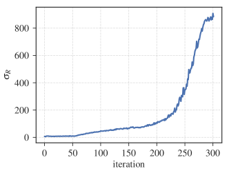
3.2 상태의 정규화
V2에서 사용되는 상태의 정규화는 회귀 작업에서 사용되는 데이터 백색화(data whitening)와 유사하며, 직관적으로 정책이 상태의 서로 다른 구성 요소에 동일한 가중치를 부여하도록 보장한다. 이것이 왜 도움이 되는지 직관을 얻기 위해, 하나의 상태 좌표는 범위의 값만 가지는 반면, 다른 상태 구성 요소는 범위의 값을 가진다고 가정해 보자. 그렇다면 첫 번째 상태 좌표에 대한 제어 이득(control gain)의 작은 변화는 두 번째 상태 구성 요소에 대한 동일한 크기의 변화보다 행동(action)에 더 큰 변화를 초래할 것이다. 따라서 백색화를 통해 무작위 탐색의 등방성(isotropic) 탐색이 다양한 상태 구성 요소에 대해 동일한 영향력을 가질 수 있게 된다.
이전 연구에서도 여러 MuJoCo 환경에 대한 신경망 모델을 피팅하기 위해 이러한 상태 정규화를 구현한 바 있다 [23]. 유사한 정규화가 신경망 정책의 가상 배치 정규화(virtual batch normalization)의 일부로서 ES에 의해 사용된다 [28].
ARS의 경우, 상태 정규화는 선형 정책의 매개변수 공간에서 비등방성(non-isotropic) 탐색의 일종으로 볼 수 있다. 구체적으로, 정책 가중치 과 섭동 방향 에 대해 다음이 성립한다.
| (3) |
여기서 이다.
우리 방법의 버전 2에 대한 주요 실험적 동기는 Humanoid-v1 작업에서 비롯된다. 알고리즘 2에 기술된 상태 정규화 없이는 이 작업에 대한 선형 정책을 학습시킬 수 없었다. 또한, 섹션 4.2에서 보여주듯이 ARS V2의 측정된 샘플 복잡도(sample complexity)는 다른 MuJoCo 보행(locomotion) 작업에서도 더 우수하다. 반면, 섹션 4.3에서 논의된 선형 이차 조절기(Linear Quadratic Regulator, LQR) 문제의 경우, 정책이 시스템을 안정화하지 못할 때 상태의 크기가 궤적 길이의 함수로서 기하급수적으로 빠르게 증가하기 때문에 ARS V2가 비실용적이라는 점에 유의한다.
3.3 최상위 성능 방향의 활용
섹션 4.2에서 우리는 ARS V2가 Swimmer-v1, Hopper-v1, HalfCheetah-v1 및 Humanoid-v1 작업에서 최첨단(state-of-the-art) 성능에 필적하거나 이를 능가함을 보여준다. 그러나 Walker2d-v1 및 Ant-v1 모델을 학습하는 데 있어, ARS V2는 경쟁 방법들보다 2~3배 더 많은 롤아웃(rollout)을 요구한다.
ARS V1 및 V2의 성능을 향상시키기 위해, 우리는 ARS V1-t 및 V2-t를 제안한다. ARS V1 및 V2에서 사용되는 업데이트 스텝에서, 각 섭동 방향 은 보상의 차이인 과 에 의해 가중치가 부여된다. 이 두 보상은 다음 정책들을 사용하여 섹션 2에 설명된 오라클(oracle)에 두 번 질의하여 얻은 것이다.
만약 이면, ARS V1 및 V2의 업데이트 스텝은 정책 가중치 을 방향으로 밀어낸다. 만약 이면, ARS V1 및 V2의 업데이트 스텝은 정책 가중치 를 방향으로 밀어낸다. 그러나 과 은 및 로 매개변수화된 정책 성능의 노이즈가 있는 평가이므로, ARS V1 및 V2는 가 더 나은 경우에도 가중치 을 방향으로 밀어내거나 그 반대로 할 수 있다. 더욱이, 정책 가중치 를 또는 방향 중 어느 쪽으로 업데이트하더라도 하위 최적(sub-optimal)의 성능으로 이어지는 섭동 방향 이 존재할 수 있다.
예를 들어, 관찰된 다른 보상들에 비해 보상 과 이 모두 작다는 것은 를 또는 방향 중 어느 쪽으로 이동시키더라도 평균 보상이 감소할 것임을 시사할 수 있다. 이러한 문제를 해결하기 위해, ARS V1-t 및 V2-t에서는 섭동 방향 를 에 따라 내림차순으로 정렬한 다음, 정책 가중치를 업데이트하는 데 상위 개의 방향만 사용할 것을 제안한다(알고리즘 2의 7번째 줄 참조).
이러한 알고리즘적 개선은 직관적으로 ARS의 업데이트 스텝을 향상시키는데, 왜냐하면 이를 통해 업데이트 스텝이 높은 보상을 얻은 방향들의 평균이 되기 때문이다. 그러나 이론적인 조사 없이는 이 알고리즘적 개선을 사용하는 효과(즉, 을 선택하는 것)를 확신할 수 없다. 일 때 버전 V1-t 및 V2-t는 버전 V1 및 V2와 동일하다. 따라서 ARS V1-t 및 V2-t의 하이퍼파라미터를 튜닝한 후에는 ARS V1 및 V2보다 성능이 떨어지지 않을 것이 확실하다. 섹션 4.2에서 우리는 ARS V2-t가 OpenAI gym에 포함된 모든 MuJoCo 보행 작업에서 최첨단 성능을 능가하거나 이에 필적함을 보여준다.
3.4 Salimans et al. [28]과의 비교
ARS는 몇 가지 방식으로 Salimans et al. [28]의 진화 전략(Evolution Strategies, ES)을 단순화한다:
-
•
ES는 경사도 추정치(gradient estimate)를 Adam 알고리즘에 입력한다.
-
•
실제 보상 값 을 사용하는 대신, ES는 보상을 순위(ranking)로 변환하고 이 순위를 사용하여 업데이트 단계를 계산한다. 순위는 학습을 더 강건(robust)하게 만들기 위해 사용된다. 반면, 우리의 방법은 보상의 표준편차로 업데이트 단계의 크기를 조정한다.
-
•
ES는 탐색을 촉진하기 위해 Swimmer-v1 및 Hopper-v1의 행동 공간(action space)을 비닝(binning)한다. 우리의 방법은 이러한 비닝 없이도 ES를 능가한다.
-
•
ES는 가상 배치 정규화(virtual batch normalization)가 적용된 신경망으로 매개변수화된 정책에 의존하는 반면, ARS는 선형 정책(linear policies)만으로도 최첨단(state-of-the-art) 성능을 달성함을 보여준다.
4 실험 결과
4.1 구현 세부사항
우리는 Python 라이브러리 Ray [22]를 사용하여 알고리즘 2의 병렬 버전을 구현했다. 변동(perturbation) 을 전송하는 계산적 병목 현상을 피하기 위해, 독립적인 표준 정규 분포 항목들을 저장하는 공유 노이즈 테이블(shared noise table)을 생성했다. 그런 다음 변동 을 직접 전송하는 대신, 워커(worker)들은 공유 노이즈 테이블의 인덱스를 전송한다. 이 접근 방식은 Moritz et al. [22]의 ES 구현에 사용되었으며 Salimans et al. [28]가 제안한 접근 방식과 유사하다. 우리의 코드는 모든 워커의 난수 생성기와 워커들이 보유한 OpenAI Gym 환경의 모든 복사본에 대한 난수 시드(random seed)를 설정한다. 이 모든 난수 시드는 서로 다르며, 우리가 난수 시드(the random seed)라고 부르는 단일 정수의 함수이다. 또한, 평가 롤아웃(evaluation rollout) 동안 생성된 상태와 보상이 학습 과정에서 어떤 형태로도 사용되지 않도록 보장했다.
4.2 MuJoCo 보행 태스크에 대한 결과
우리는 OpenAI Gym-v [3, 34]에 포함된 MuJoCo 보행(locomotion) 태스크에서 ARS의 성능을 평가한다. OpenAI Gym은 다양한 MuJoCo 보행 태스크에 대한 벤치마크 보상 함수를 제공한다. 우리는 ARS로 학습된 선형 정책의 성능을 평가하기 위해 이러한 기본 보상 함수를 사용했다. 보고된 정책의 보상은 번의 독립적인 롤아웃에 대해 평균을 낸 값이다.
Hopper-v1, Walker2d-v1, Ant-v1, 및 Humanoid-v1 태스크의 경우, 기본 보상 함수에는 종료 조건(즉, 넘어짐)에 도달하지 않는 한 각 타임스텝마다 에이전트에게 일정한 보상을 제공하는 생존 보너스(survival bonus)가 포함되어 있다. 예를 들어, Humanoid-v1 환경은 휴머노이드 모델이 넘어지지 않는 한 각 타임스텝마다 의 보상을 부여한다. 따라서 휴머노이드 모델이 타임스텝 동안 가만히 서 있으면, 수직 자세를 유지하는 데 사용된 행동에 대한 소량의 패널티를 제외하고 의 보상을 받게 된다. 또한, 휴머노이드가 롤아웃이 끝날 때 앞으로 넘어지면 보다 높은 보상을 받게 된다.
보상 임계값 [8, 27, 28]에 도달하는 데 필요한 에피소드 수를 보여줌으로써 RL 방법의 샘플 복잡도(sample complexity)를 보고하는 것이 일반적인 관례이다. 예를 들어, Gu et al. [8]은 임계값으로 를 선택한 반면, Rajeswaran et al. [27]은 임계값으로 를 선택했다. 그러나 Humanoid-v1에 부여되는 생존 보너스를 고려할 때, 우리는 이러한 보상 임계값이 보행에 있어 의미가 없다고 생각한다. 표 1와 섹션 4.4에서 우리는 Humanoid-v1 태스크에서 ARS의 성능을 평가하기 위해 Salimans et al. [28]에서도 사용된 보상 임계값인 을 사용한다.
OpenAI Gym에서 제공하는 생존 보너스는 초기에 넘어지게 만드는 정책의 탐색을 저해하는데, 이는 보행을 달성하는 정책을 발견하는 데 필수적이다. 이러한 보너스는 ARS가 MuJoCo 모델을 1,000 타임스텝 동안 가만히 서 있게 만드는 정책(국소 최적해일 가능성이 높은 정책)을 찾도록 만든다. 이러한 보너스는 아마도 확률적 정책(stochastic policies)의 학습을 돕기 위해 보상 함수에 포함되었을 것인데, 왜냐하면 그러한 정책은 확률적 행동을 통해 끊임없는 움직임을 유발하기 때문이다. 결정론적 정책(deterministic policies) 학습 시 발생하는 국소 최적해 문제를 해결하기 위해, 우리는 학습 중에 OpenAI Gym이 출력하는 보상에서 생존 보너스를 차감했다. 학습된 정책의 평가를 위해서는 기본 보상 함수를 사용했다.
우리는 먼저 하이퍼파라미터 튜닝 후 3개의 난수 시드에서 ARS의 성능을 평가했다. 3개의 난수 시드에 대한 평가는 문헌에서 널리 채택되고 있으므로, ARS를 경쟁 방법들과 동일한 선상에 두고자 했다. 그 다음, 성능을 철저히 추정하기 위해 개의 난수 시드에서 ARS의 성능을 평가했다. 마지막으로, 하이퍼파라미터 변화에 대한 우리 방법의 민감도도 평가했다.
3개 난수 시드 평가:
우리는 다양한 버전의 ARS를 신뢰 영역 정책 최적화(TRPO), 심층 결정론적 정책 경사법(DDPG), 자연 경사법(NG), 진화 전략(ES), 근사 정책 최적화(PPO), 소프트 액터-크리틱(SAC), 소프트 Q-러닝(SQL), A2C, 교차 엔트로피 방법(CEM)과 비교했다. 이러한 방법들의 성능 수치는 Rajeswaran et al. [27], Salimans et al. [28], Schulman et al. [31], Haarnoja et al. [10]에서 보고된 값을 사용했다.
Rajeswaran et al. [27]과 Schulman et al. [31]은 3개의 난수 시드에서 RL 알고리즘의 성능을 평가한 반면, Salimans et al. [28]와 Haarnoja et al. [10]은 각각 6개와 5개의 난수 시드를 사용했다. 모든 방법을 동일한 선상에서 비교하기 위해, ARS 평가를 위해 구간 에서 3개의 난수 시드를 균등하게 샘플링하여 고정했다. 6개의 대중적인 MuJoCo 보행 태스크 각각에 대해 부록 A.2에 표시된 하이퍼파라미터 그리드333ARS V1 및 V2는 오직 세 개의 하이퍼파라미터, 즉 단계 크기(step-size) , 변동 방향의 수 , 변동의 크기 만을 취한다는 점을 상기하라. ARS V1-t 및 V2-t는 추가적인 하이퍼파라미터로 사용되는 상위 방향의 수 ()을 취한다.를 선택했으며, 각 하이퍼파라미터 세트에 대해 ARS V1, V2, V1-t, V2-t를 고정된 3개의 난수 시드 각각에 대해 한 번씩 총 3번 실행했다.
Table 1은 NG와 TRPO에 대해 Rajeswaran et al. [27]이 보고한 값을 사용하여, 규정된 보상 임계값에 도달하는 데 필요한 ARS, NG, TRPO의 평균 에피소드 수를 보여준다. ARS의 각 버전과 각 MuJoCo 태스크에 대해 보상 임계값에 도달하는 데 필요한 평균 에피소드 수를 최소화하는 하이퍼파라미터를 선택하였다. 이에 해당하는 ARS의 학습 곡선은 Figure 2에 나와 있다. Humanoid-v1을 제외한 모든 MuJoCo 태스크에 대해 Rajeswaran et al. [27]과 동일한 보상 임계값을 사용하였다. Humanoid-v1의 보상 임계값을 높이기로 한 결정은 Section 4.1에서 논의된 바와 같이 생존 보너스(survival bonus)의 존재에 기인한다.
| Average # episodes to reach reward threshold | ||||||||
| Task | Threshold | ARS | NG-lin | NG-rbf | TRPO-nn | |||
| V1 | V1-t | V2 | V2-t | |||||
| Swimmer-v1 | N/A 444N/A means that the method did not reach the reward threshold. | |||||||
| Hopper-v1 | ||||||||
| HalfCheetah-v1 | ||||||||
| Walker2d-v1 | ||||||||
| Ant-v1 | ||||||||
| Humanoid-v1 | N/A | N/A | UNK555UNK stands for unknown. | |||||
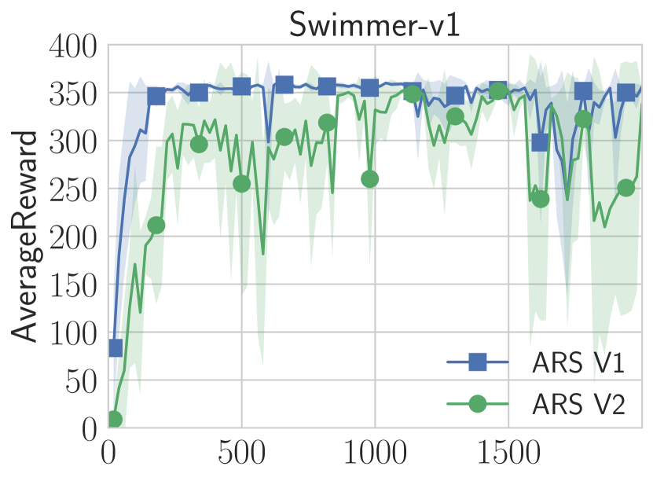
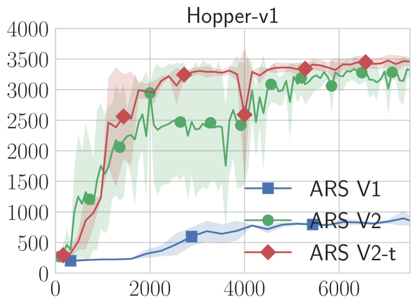
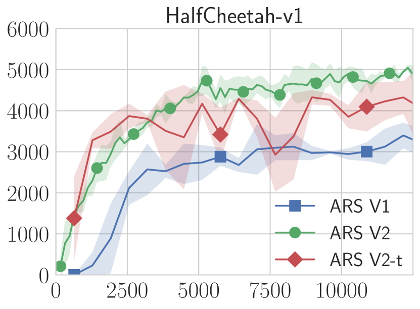
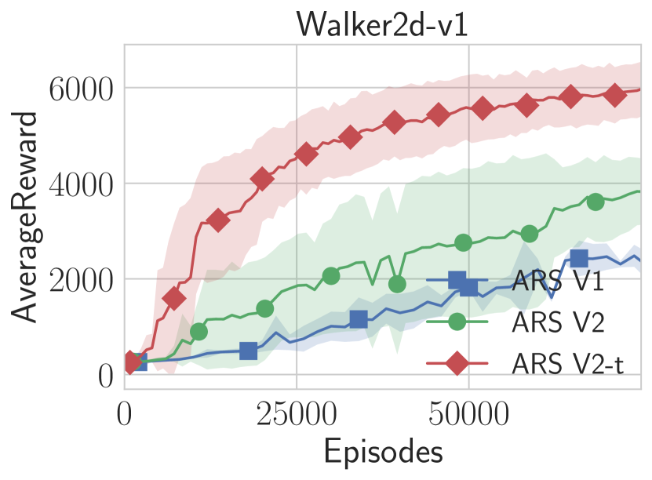
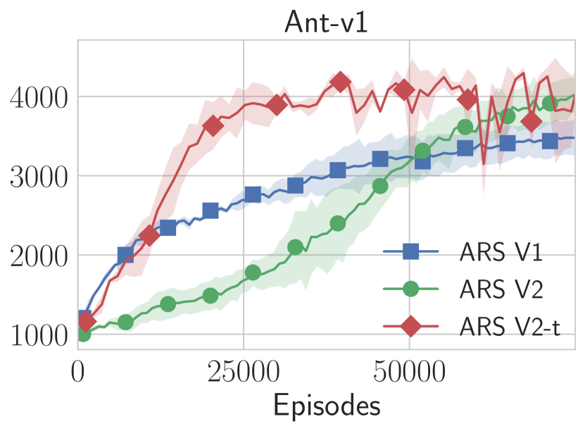
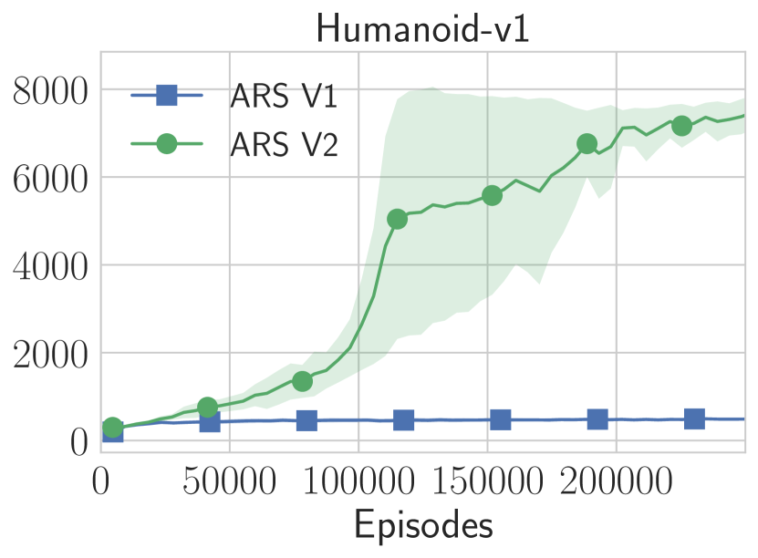
Table 1은 ARS V1이 ARS V2에 의해 성공적으로 해결된 Humanoid-v1을 제외한 모든 MuJoCo 보행 태스크에 대해 정책을 학습시킬 수 있음을 보여준다. 둘째, ARS V2가 Swimmer-v1, Hopper-v1, HalfCheetah-v1 태스크에서 NG나 TRPO보다 빠르게 규정된 임계값에 도달하며, Humanoid-v1 태스크에서는 NG의 성능과 일치함을 확인하였다. Walker2d-v1 및 Ant-v1 태스크에서는 ARS V2가 NG보다 뒤처진다. 그럼에도 불구하고, ARS V2-t가 이 두 태스크에서 NG의 성능을 능가한다는 점에 주목한다. TRPO가 Walker2d-v1에 대해 ARS보다 빠르게 보상 임계값에 도달하지만, 다른 지표에서는 ARS가 TRPO를 능가함을 확인하게 될 것이다.
Table 2은 시뮬레이터 타임스텝(timestep)이 100만 번 수집된 후 ARS666부록 A.1에서 ARS에 대한 이 값을 계산하는 방법론을 설명한다., PPO, A2C, CEM, TRPO가 달성한 최대 보상을 고정된 3개의 무작위 시드에 대해 평균하여 보여준다. 하이퍼파라미터는 Table 1 및 Figure 2을 위해 수행된 것과 동일한 평가를 기반으로 선택되었다. Schulman et al. [31]는 OpenAI gym의 Ant-v1 및 Humanoid-v1 태스크에 대한 PPO, A2C, CEM, TRPO의 성능을 보고하지 않았다. Table 2는 ARS가 Swimmer-v1, Hopper-v1, HalfCheetah-v1 태스크에서 이 네 가지 방법을 능가함을 보여준다. Walker2d-v1 태스크에서는 PPO가 ARS보다 더 높은 평균 최대 보상을 달성하는 반면, ARS는 A2C, CEM, TRPO와 유사한 최대 보상을 달성한다.
| Maximum average reward after # timesteps | ||||||
| Task | # timesteps | ARS | PPO | A2C | CEM | TRPO |
| Swimmer-v1 | ||||||
| Hopper-v1 | ||||||
| HalfCheetah-v1 | ||||||
| Walker2d-v1 | ||||||
Table 3은 규정된 수의 시뮬레이터 타임스텝이 수집된 후 ARS, SAC, DDPG, SQL, TRPO가 달성한 최대 보상을 보여준다. ARS의 하이퍼파라미터는 Table 1 및 Figure 2를 위해 수행된 것과 동일한 평가를 기반으로 선택되었다. Table 3은 ARS가 Hopper-v1 및 Walker2d-v1 태스크에서 SAC, DDPG, SQL, TRPO를 능가하며, HalfCheetah-v1 태스크에서는 ARS가 SAC, DDPG, SQL에 의해 추월당함을 보여준다. 그러나 ARS는 이 태스크에서 TRPO보다 더 나은 성능을 보인다. Ant-v1 태스크에서 ARS는 SAC에 의해 추월당하고 SQL과 유사한 성능을 보이지만, DDPG 및 TRPO보다는 우수한 성능을 나타낸다. Haarnoja et al. [10]에서 평가를 위해 이 태스크들의 OpenAI 버전을 사용하지 않았기 때문에 Swimmer-v1 및 Humanoid-v1에 대한 값은 포함하지 않았다. 대신 그들은 이 태스크들의 rllab 버전 [6]에서 SAC를 평가하였다. 저자들은 OpenAI gym에서 사용하는 상태(state)의 매개변수화(parametrization) 때문에 Humanoid-v1이 rllab 버전보다 SAC에 더 도전적이며, Swimmer-v1은 사용된 보상 함수 때문에 더 도전적이라고 밝혔다.
| Maximum average reward after # timesteps | ||||||
|---|---|---|---|---|---|---|
| Task | # timesteps | ARS | SAC | DDPG | SQL | TRPO |
| Hopper-v1 | ||||||
| HalfCheetah-v1 | ||||||
| Walker2d-v1 | ||||||
| Ant-v1 | ||||||
Table 4은 고정된 3개의 무작위 시드에 대해 평균하여, ARS가 규정된 보상 임계값에 도달하는 데 필요한 타임스텝 수를 보여준다. 하이퍼파라미터는 Table 1 및 Figure 2를 위해 수행된 것과 동일한 평가를 기반으로 선택되었다. ARS를 ES 및 TRPO와 비교한다. 이 두 방법에 대해서는 평가를 위해 6개의 무작위 시드를 사용한 Salimans et al. [28]이 보고한 값을 보여준다. Salimans et al. [28]는 Ant-v1 및 Humanoid-v1 태스크에 대한 샘플 복잡도(sample complexity) 결과를 보고하지 않았다. Table 4는 Walker2d-v1에서 규정된 보상 임계값에 도달하는 데 TRPO가 ARS보다 더 적은 타임스텝을 필요로 함을 보여준다. 그러나 Swimmer-v1, Hopper-v1, HalfCheetah-v1 태스크에서는 ARS가 ES 및 TRPO보다 더 적은 타임스텝을 필요로 함을 알 수 있다.
| Average # timesteps to hit Th. | ||||
|---|---|---|---|---|
| Task | Threshold | ARS | ES | TRPO |
| Swimmer-v1 | ||||
| Hopper-v1 | ||||
| HalfCheetah-v1 | ||||
| Walker2d-v1 | ||||
100개 시드 평가:
3개의 무작위 시드에서 ARS를 평가한 결과, 전반적으로 우리의 방법이 MuJoCo 보행 태스크에서 NG, ES, DDPG, PPO, SAC, SQL, A2C, CEM, TRPO 방법보다 샘플 효율성(sample efficiency)이 더 높음을 보여준다. 그러나 RL 알고리즘이 높은 학습 분산(variance)을 보인다는 것은 잘 알려져 있다 [13, 12].
철저한 평가를 위해, 구간 에서 균등 무작위로 개의 서로 다른 무작위 시드를 샘플링하였다. 그런 다음 Table 1 및 Figure 2을 위해 선택된 하이퍼파라미터를 사용하여, 6개의 MuJoCo 보행 태스크와 개의 무작위 시드 각각에 대해 ARS를 실행하였다. 이와 같이 철저한 평가는 Section 4.4에서 논의된 바와 같이 ARS의 계산 비용(computational footprint)이 작기 때문에 비로소 가능했다.
결과는 Figure 3에 나와 있다. Figure 3은 ARS가 의 확률로만 성공하는 Walker2d-v1을 제외하고, 의 확률로 모든 MuJoCo 보행 태스크에 대한 정책을 학습시킴을 보여준다. 더욱이, ARS는 경쟁력 있는 에피소드 수를 사용하면서도 높은 비율로 정책 학습에 성공한다.
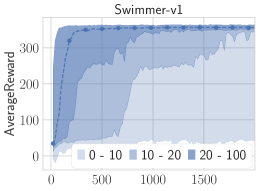
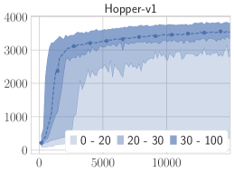
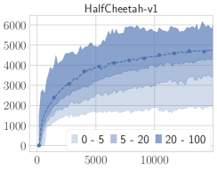
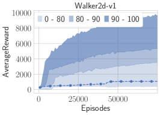
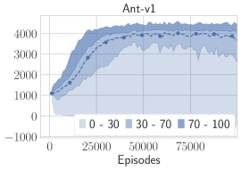
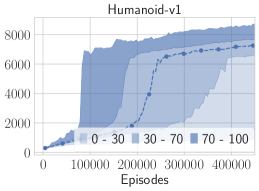
Figure 3에서 사용되었으며 ARS가 높은 보상에 도달하지 못하게 만드는 무작위 시드에는 두 가지 유형이 있다. 충분히 많은 횟수의 ARS 반복(iteration)이 수행되면 결국 ARS가 높은 보상의 정책을 찾아내는 무작위 시드가 있고, ARS를 국소 최적(locally optimal) 행동으로 이끄는 무작위 시드가 있다. Humanoid 모델의 경우, ARS는 한 다리로만 뛰거나, 뒤로 걷거나, 소용돌이치듯 움직이는 것을 포함하여 수많은 독특한 걸음걸이(gait)를 찾아냈다. 이러한 걸음걸이는 학습 속도를 느리게 만드는 무작위 시드에서 ARS에 의해 발견되었다. Humanoid 모델에 대한 다양한 걸음걸이가 이전에도 관찰된 바 있으나 [11], 우리의 평가는 그 널리 퍼진 정도를 더 잘 강조한다. 이러한 결과는 소수의 시드에 대한 평가가 고도로 비볼록(non-convex)한 최적화 문제에 대해 좋은 솔루션을 찾는 알고리즘의 능력을 올바르게 포착할 수 없기 때문에, 많은 무작위 시드에서 RL 알고리즘을 평가하는 것의 중요성을 더욱 강조한다.
초매개변수(Hyperparameter) 민감도:
RL 방법을 실제에 적용하고자 한다면 초매개변수 선택에 민감하지 않아야 한다는 점이 문헌에서 올바르게 지적된 바 있다 [10]. 예를 들어, DDPG는 초매개변수 선택에 매우 민감하여 실제 사용하기 어려운 것으로 알려져 있다 [6, 10, 12]. 위에서 제시한 ARS 평가에서는 고정된 3개의 무작위 시드(random seed)에 대해 튜닝하여 선택한 초매개변수를 사용했다. 초매개변수 선택에 대한 ARS의 민감도를 파악하기 위해, 그림 4에 고정된 3개의 무작위 시드에 대해 튜닝을 위해 고려된 모든 초매개변수의 중앙값 성능을 플롯했다. 서로 다른 MuJoCo 작업에 사용된 초매개변수 그리드는 부록 A.2에 나와 있음을 상기하라.
흥미롭게도, 그림 4에 묘사된 ARS의 성공률은 그림 3에 나타난 것과 유사하다. 그림 4는 Ant-v1 및 Humanoid-v1에 대해서만 중앙값 성능의 감소를 보여준다. 그림 3과 4 사이의 유사성은 ARS의 성공이 무작위 시드의 선택만큼이나 초매개변수의 선택에 의해서도 영향을 받는다는 것을 보여준다. 달리 말하면, ARS는 초매개변수를 변경할 때의 성공률이 "좋은" 초매개변수 선택으로 독립적인 실험을 수행할 때의 성공률과 유사하기 때문에 초매개변수 선택에 크게 민감하지 않다. 마지막으로, 그림 4는 민감도 평가에 자주 사용되는 문제인 HalfCheetah-v1 작업에서 ARS의 성능이 [10, 12] 초매개변수 선택에 가장 덜 민감함을 보여준다.
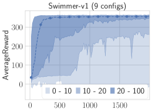
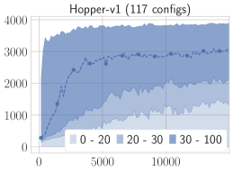
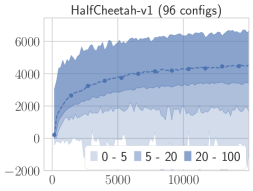
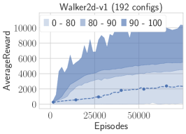
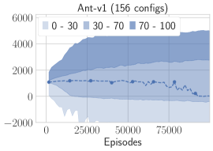
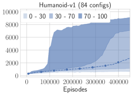
선형 정책은 MuJoCo에 충분히 표현력이 있다:
개의 무작위 시드에 대한 평가에서 우리는 선형 정책이 MuJoCo 모델에 대해 어떻게 다양한 보행(gait)을 생성할 수 있는지 논의했으며, 선형 정책이 다양한 행동을 포착하기에 충분히 표현력이 있음을 보여주었다. 더욱이, 표 5은 선형 정책이 모든 MuJoCo 보행 작업에서 높은 보상을 달성할 수 있음을 보여준다. 특히, Humanoid-v1 및 Walker2d-v1의 경우 ARS는 문헌에서 접한 다른 어떤 결과보다 훨씬 더 높은 보상을 달성하는 정책을 찾아냈다. 이러한 결과는 선형 정책이 MuJoCo 보행 작업에 완벽하게 적합함을 보여주며, 더 표현력이 뛰어나고 계산 비용이 많이 드는 정책의 필요성을 줄여준다.
| Maximum reward achieved | |
|---|---|
| Task | ARS |
| Swimmer-v1 | |
| Hopper-v1 | |
| HalfCheetah-v1 | |
| Walker | |
| Ant | |
| Humanoid | |
4.3 선형 이차 조절기 (Linear Quadratic Regulator, LQR)
위에서 고려한 MuJoCo 보행 작업은 RL 문헌에서 인기 있는 벤치마크이지만 단점도 있다. 달성 가능한 최대 보상과 최적 정책이 알려져 있지 않으며, 현재의 최첨단(state-of-the-art) 기술도 실제로는 매우 차선책(suboptimal)일 수 있다. 이러한 방법들은 높은 분산을 보여 학습된 정책의 품질을 구별하기 어렵게 만든다. 그리고 새로운 인스턴스를 생성하기 어렵기 때문에, 커뮤니티가 이 소규모 테스트 세트에 과적합(overfitting)되고 있을 수 있다.
본 섹션에서는 이러한 단점 중 많은 부분을 해결하는 더 간단한 벤치마크인 시스템 동역학(dynamics)을 모르는 클래식 선형 이차 조절기(LQR)를 제안한다. 제어 이론에서 동역학을 아는 LQR은 철저히 이해되어 있는 근본적인 문제이다. 이 문제의 목표는 이차 비용(quadratic cost)을 최소화하면서 선형 동적 시스템을 제어하는 것이다. 이 문제는 식 (4)으로 공식화된다. 상태 은 에 있고, 행동 은 에 있으며, 행렬 , , , 은 적절한 차원을 가진다. 노이즈 프로세스 는 독립항등분포(i.i.d.) 가우시안이다. 동역학 을 알 때, 완만한 조건 하에서 문제 (4)은 대수 리카티 방정식(algebraic Riccati equation)의 해로부터 효율적으로 계산되는 고유한 행렬 에 대해 형태의 최적 정책을 허용한다. 더욱이, 문제 4의 유한 시간 지평(finite horizon) 버전은 동적 계획법(dynamic programming)을 통해 효율적으로 해결할 수 있다.
| (4) | ||||
동역학을 모르는 LQR은 이해도가 훨씬 떨어지며 새로운 연구를 위한 비옥한 토양을 제공한다. LQR을 위한 다양한 인스턴스 세트를 생성하는 것은 여전히 매우 간단하며, 동역학을 알 때 달성 가능한 최선의 비용과 항상 비교할 수 있다는 점에 주목하라.
자연스러운 모델 기반 접근 방식은 데이터로부터 전이 행렬 을 추정한 다음, 추정치를 리카티 방정식에 대입하여 을 푸는 것으로 구성된다. 이러한 방식으로 계산된 제어기 를 공칭 제어기(nominal controller)라고 부른다. 이 방법이 이상적으로 강건(robust)하지는 않을 수 있지만(예: Dean et al. [4] 참조), 공칭 제어는 다른 방법들과 비교할 수 있는 유용한 기준선(baseline)을 제공한다.
동역학을 모르는 LQR에 대한 도전적인 저차원 인스턴스로서 Dean et al. [4]에 의해 도입되어 정의된 LQR 인스턴스를 고려한다.
| (5) |
행렬 은 보다 큰 고유값(eigenvalue)을 가지므로, 시스템은 제어 없이는 불안정하다. 더욱이, 어떤 방법이 시스템이 불안정하다는 것을 인식하지 못하면 안정적인 제어기를 생성하지 못할 수 있다. 그림 5에서 우리는 ARS를 공칭 제어 및 시간차 학습(temporal differencing)으로 피팅된 Q-함수를 사용하는 방법(LSPI, Tu and Recht [35]에 의해 분석됨)과 비교한다.
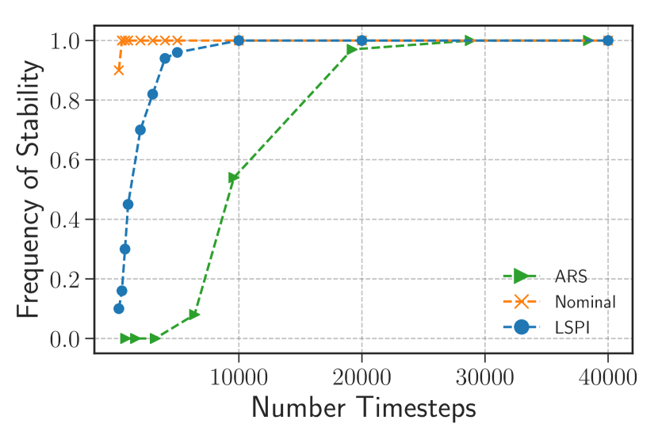
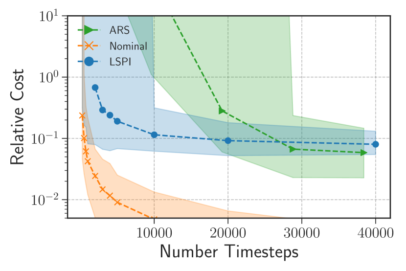
4.4 계산 효율성
선형 정책의 작은 계산 풋프린트와 ARS의 극도로 병렬화하기 쉬운(embarrassingly parallel) 구조는 적은 계산 자원으로 짧은 시간 내에 정책을 훈련하는 데 우리 방법을 이상적으로 만든다. 표 6과 7에서 우리는 개의 무작위 시드에 대해 평가했을 때, ARS가 평균 보상 에 도달하는 데 필요한 벽시계 시간(wall-clock time)을 보여준다. 개의 CPU를 가진 하나의 m5.24xlarge EC2 인스턴스에서 훈련할 때, ARS는 규정된 보상 임계값에 도달하는 데 중앙값 분이 소요된다. Salimans et al. [28]의 진화 전략(Evolution Strategies, ES) 방법은 번의 시도에 대해 평가했을 때 중앙값 분이 걸렸다. 그러나 저자들은 번의 시도가 동일한 무작위 시드를 사용한 여러 번의 시도인지, 아니면 서로 다른 무작위 시드를 사용한 여러 번의 시도인지 명확히 하지 않았다. 또한, 표 7은 ARS가 개의 시드 중 개에서 기껏해야 분 만에 정책을 훈련함을 보여준다. 아울러, 표 6는 ARS가 ES보다 최대 배 적은 CPU 시간을 요구함을 보여준다.
마지막으로, 우리의 방법이 더 많은 워커(worker)로 확장될 수 있음을 지적하고자 한다. 이 경우, ARS V2는 여러 워커 간에 통계량 및 을 집계하는 과정에서 계산 병목 현상이 발생할 것이다. 정책을 성공적으로 훈련하기 위해, ARS V2는 통계량의 업데이트(알고리즘 2의 2행 참조)가 매 반복마다 일어날 것을 요구하지 않는다. 예를 들어, ES 구현에서 Moritz et al. [22]는 각 워커가 및 에 대해 자체적인 독립적 추정치를 갖도록 허용했다. 이러한 선택을 통해 저자들은 Ray를 사용하여 ES를 개의 코어로 확장하여, Humanoid-v1에서 분 만에 의 보상에 도달했다. 워커 간의 통신 시간을 줄이거나 ARS의 샘플 복잡도를 줄이기 위해 통계량 및 의 업데이트 일정을 튜닝할 수도 있다. 단순함을 위해 우리는 이러한 일정을 튜닝하는 것을 자제했다.
| Algorithm | Instance Type | # CPUs | Median Time | CPU Time |
|---|---|---|---|---|
| Evolution Strategies | UNK | minutes | hours | |
| UNK | minutes | hours | ||
| ARS V2 | m5.24xlarge | minutes | hours | |
| c5.9xlarge | minutes | hours | ||
| c4.8xlarge | minutes | hours |
| # minutes by percentile | ||||||
|---|---|---|---|---|---|---|
| Algorithm | Instance Type | # CPUs | 10th | 25th | 50th | 75th |
| ARS V2 | m5.24xlarge | |||||
| c5.9xlarge | ||||||
| c4.8xlarge | ||||||
5 결론
우리는 RL 문헌에서 사용되는 연속 제어 벤치마크에서 우수한 성능을 보이는 모델 프리 RL을 위한 가장 단순한 알고리즘을 찾고자 시도했다. 우리는 몇 가지 알고리즘적 보강을 통해, 기본적인 무작위 탐색을 사용하여 MuJoCo 보행 태스크에서 최첨단(state-of-the-art) 샘플 효율성을 달성하는 선형 정책을 훈련할 수 있음을 입증했다. 우리는 선형 정책이 복잡한 신경망 정책의 성능과 대등하며 단순한 알고리즘을 통해 찾을 수 있음을 보여주었다. 알고리즘과 정책이 단순하기 때문에 광범위한 민감도 조사를 수행할 수 있었고, 우리 방법이 매우 비볼록(nonconvex)한 문제에 대해 높은 비율로 좋은 솔루션을 찾을 수 있음을 관찰했다. RL 알고리즘의 분산 [12, 13]을 고려하더라도, 우리 방법은 하이퍼파라미터와 무작위 시드를 변경했을 때 MuJoCo 보행 태스크에서 최첨단 성능을 달성한다. 우리의 결과는 MuJoCo RL 태스크의 정책 훈련에 내재된 높은 분산을 강조한다. 따라서 RL 문헌에서 흔히 볼 수 있듯이 단지 소수의 무작위 시드에 대해서만 RL 알고리즘을 평가하는 것이 무엇을 얻을 수 있는지 명확하지 않다. 소수의 무작위 시드에 대한 평가는 높은 분산으로 인해 성능을 적절하게 포착하지 못한다.
우리의 결과는 RL 알고리즘 평가에 사용되는 일반적인 방법론의 몇 가지 문제를 지적한다. 많은 RL 연구자들이 샘플 복잡도를 최소화하는 것에 관심을 두고 있지만, 단일 인스턴스에 대해 알고리즘의 실행 시간을 최적화하는 것은 의미가 없다. 알고리즘의 실행 시간은 (a) 인스턴스 패밀리에 대해 평가되거나, (b) 알고리즘 클래스를 명확히 제한할 때만 의미 있는 개념이 된다.
그러나 일반적인 RL 관행은 (a)나 (b) 중 어느 것도 따르지 않는다. 대신 연구자들은 주어진 하이퍼파라미터 설정으로 태스크 에서 알고리즘 을 실행하고, 알고리즘이 개의 샘플을 수집한 후 목표 보상에 도달함을 보여주는 "학습 곡선"을 그린다. 그런 다음 해당 방법의 "샘플 복잡도"는 주어진 하이퍼파라미터 설정에서 목표 보상 임계값에 도달하는 데 필요한 샘플 수로 보고된다. 그러나 하이퍼파라미터 설정은 얼마든지 시도해 볼 수 있다. 수많은 알고리즘적 개선 사항을 추가하거나 폐기한 다음 시뮬레이션에서 테스트할 수 있다. 샘플 복잡도를 공정하게 측정하려면, 테스트된 모든 하이퍼파라미터에 사용된 총 롤아웃(rollout) 수를 계산해야 하지 않겠는가?
만약 볼록 최적화(convex optimization) 분야가 전적으로 동일한 평가 방법에 의존했다면 어떤 일이 일어났을지 살펴보자. 목적 함수 을 최적화하는 데 있어 확률적 경사 하강법(stochastic gradient method)의 성능을 평가하고자 한다고 가정하자. 여기서 은 모든 무작위 변수 에 대해 강볼록(strongly convex)하고 매끄러운(smooth) 1차원 함수이다. 또한 모든 에 대해 함수 가 동일한 최소점(minimizer)을 갖는다고 가정하자. 매 반복마다 알고리즘은 오라클에 확률적 경사를 요청한다. 오라클은 를 샘플링하고 알고리즘에 도함수 을 반환한다.
그렇다면 현재의 RL 평가 방법론에 따를 때, 우리는 무작위 시드를 고정하여 오라클이 샘플링하는 무작위 변수의 시퀀스 을 고정한 다음, 확률적 경사 하강법의 스텝 크기(step-size)를 튜닝하기 시작한다. 각 스텝 크기에 대해 오라클이 샘플링하는 첫 번째 무작위 변수는 동일하므로 이를 이라 부르면, 번의 시도 후에 알고리즘의 1회 반복만으로 의 -근사 최소점에 도달하도록 보장하는 스텝 크기를 결정할 수 있다. 모든 함수 가 동일한 최소점을 가지므로, 1회 반복 후에 찾은 점은 의 최소점에 -근사할 것이다. 따라서 배후에서 번의 오라클 호출을 사용함으로써, 단 한 번의 반복으로 목적 함수를 최적화하는 스텝 크기를 이끌어낼 수 있다. 그러나 동일한 알고리즘이 새로운 목적 함수를 최적화하는 데는 하나 이상의 샘플을 요구할 것이기 때문에, 이 알고리즘의 샘플 복잡도가 1이라고 말하지는 않을 것이다. 샘플 복잡도의 더 나은 측정 기준은 튜닝과 최종 최적화에 필요한 총 샘플 수인 가 되겠지만, 이 방법론 역시 알고리즘의 올바른 샘플 복잡도를 포착하지 못할 것이다. 실제로 우리는 과 같은 목적 함수의 최적화를 위한 확률적 경사 하강법의 샘플 복잡도가 임을 알고 있다.
RL 태스크는 위에서 고려한 1차원 볼록 목적 함수만큼 단순하지 않으며, RL 방법들은 둘 이상의 무작위 시드에서 평가된다. 그러나 우리의 논지는 여전히 유효하다. 최적의 하이퍼파라미터 튜닝을 통해 어떤 방법의 인지되는 샘플 효율성을 인위적으로 향상시킬 수 있다. 실제로 이것이 우리의 연구에서 확인한 바이다. 기본적인 무작위 탐색에 세 번째 알고리즘적 개선을 추가함으로써(즉, ARS V2를 V2-t로 향상시킴으로써), 우리는 이미 매우 우수한 성능을 보이는 방법의 샘플 효율성을 더욱 개선할 수 있었다. RL의 이전 연구 대부분이 훨씬 더 많은 튜닝 가능한 파라미터를 가진 알고리즘과 그 자체로 하이퍼파라미터인 아키텍처를 가진 신경망을 사용한다는 점을 고려할 때, 해당 방법들에 대해 보고된 샘플 복잡도의 유의성은 명확하지 않다. 이 문제는 중요한데, 왜냐하면 알고리즘의 의미 있는 샘플 복잡도는 이전에 보지 못한 새로운 태스크를 해결하는 데 필요한 샘플 수를 알려주어야 하기 때문이다. 시뮬레이션 태스크는 문제 그 자체가 아니라 문제의 한 인스턴스로 생각해야 한다.
이러한 문제들과 우리의 실험적 결과를 고려하여, 우리는 향후 연구를 위해 몇 가지 제안을 하고자 한다:
-
•
더 복잡한 벤치마크와 방법으로 나아가기 전에 단순한 베이스라인이 확립되어야 한다. 더 단순한 알고리즘은 실험적으로 평가하기 쉽고 이론적으로 이해하기 쉽다. 우리는 LQR이 합리적인 베이스라인이라고 제안하는데, 이 태스크는 모델을 알 때 매우 잘 이해되어 있고, 다양한 난이도로 인스턴스를 생성할 수 있으며, 재현을 위해 필요한 오버헤드가 거의 없기 때문이다.
-
•
게임 및 물리 시뮬레이터가 평가에 사용될 때, RL 방법의 튜닝과 평가에는 서로 다른 문제 인스턴스가 사용되어야 한다. 또한 통계적으로 유의미한 평가를 위해 많은 수의 무작위 시드가 사용되어야 한다. 그러나 게임 및 물리 시뮬레이터에서 발생하는 문제의 분포는 우리가 해결하고자 하는 문제의 분포와 다르기 때문에, 이 방법론 역시 이상적이지는 않다. 특히 평가가 시뮬레이션에서만 수행될 때 한 알고리즘이 다른 알고리즘보다 더 낫다고 말하기는 어려운데, 알고리즘 중 하나가 사용된 시뮬레이터의 특이성을 이용하고 있을 수 있기 때문이다.
-
•
다양한 클래스의 문제에 적용 가능한 알고리즘을 개발하려고 노력하기보다는, 관심 있는 특정 문제에 집중하여 표적화된 솔루션을 찾는 것이 더 나을 수 있다.
-
•
모델 기반 방법(model-based methods)의 개발에 더 많은 강조를 두어야 한다. 많은 문제에서 이러한 방법들은 모델 프리(model-free) 방법들보다 더 적은 샘플을 필요로 하는 것으로 관찰되었다. 게다가, 시스템의 물리학적 특성이 다양한 문제에 사용되는 모델의 매개변수 클래스(parametric classes)에 정보를 제공해야 한다. 모델 기반 방법 자체도 많은 계산적 문제를 수반하지만, 향상된 트리 탐색과 같은 심층 강화학습(deep RL)의 도구들이 복잡하고 불확실한 환경을 탐색해야 하는 과제에 대해 새로운 전진 경로를 제공할 가능성이 충분히 있다.
감사의 글
많은 유용한 의견과 제안을 주신 Orianna DeMasi, Moritz Hardt, Eric Jonas, Robert Nishihara, Rebecca Roelofs, Esther Rolf, Vaishaal Shankar, Ludwig Schmidt, Nilesh Tripuraneni, Stephen Tu에게 감사드린다. HM은 병렬 컴퓨팅에 대한 전문 지식을 공유해 준 Robert Nishihara와 Vaishaal Shankar에게 감사를 표한다. RISE 랩의 일원으로서, HM은 일반적으로 NSF CISE Expeditions Award CCF-1730628, DHS Award HSHQDC-16-3-00083, 그리고 Alibaba, Amazon Web Services, Ant Financial, CapitalOne, Ericsson, GE, Google, Huawei, Intel, IBM, Microsoft, Scotiabank, Splunk 및 VMware의 기부금으로부터 부분적으로 지원을 받는다. BR은 NSF award CCF-1359814, ONR awards N00014-14-1-0024 및 N00014-17-1-2191, DARPA Fundamental Limits of Learning (Fun LoL) 프로그램, 그리고 Amazon AWS AI Research Award로부터 부분적으로 아낌없는 지원을 받고 있다.
References
- Agarwal et al. [2010] A. Agarwal, O. Dekel, and L. Xiao. Optimal algorithms for online convex optimization with multi-point bandit feedback. In COLT, pages 28–40. Citeseer, 2010.
- Bach and Perchet [2016] F. Bach and V. Perchet. Highly-smooth zero-th order online optimization. In Conference on Learning Theory, pages 257–283, 2016.
- Brockman et al. [2016] G. Brockman, V. Cheung, L. Pettersson, J. Schneider, J. Schulman, J. Tang, and W. Zaremba. Openai gym, 2016.
- Dean et al. [2017] S. Dean, H. Mania, N. Matni, B. Recht, and S. Tu. On the sample complexity of the linear quadratic regulator. arXiv preprint arXiv:1710.01688, 2017.
- Degris et al. [2012] T. Degris, M. White, and R. S. Sutton. Off-policy actor-critic. arXiv preprint arXiv:1205.4839, 2012.
- Duan et al. [2016] Y. Duan, X. Chen, R. Houthooft, J. Schulman, and P. Abbeel. Benchmarking deep reinforcement learning for continuous control. In International Conference on Machine Learning, pages 1329–1338, 2016.
- Flaxman et al. [2005] A. D. Flaxman, A. T. Kalai, and H. B. McMahan. Online convex optimization in the bandit setting: gradient descent without a gradient. Proceedings of the sixteenth annual ACM-SIAM symposium on Discrete algorithms, pages 385–394, 2005.
- Gu et al. [2016] S. Gu, T. Lillicrap, Z. Ghahramani, R. E. Turner, and S. Levine. Q-prop: Sample-efficient policy gradient with an off-policy critic. arXiv preprint arXiv:1611.02247, 2016.
- Haarnoja et al. [2017] T. Haarnoja, H. Tang, P. Abbeel, and S. Levine. Reinforcement learning with deep energy-based policies. arXiv preprint arXiv:1702.08165, 2017.
- Haarnoja et al. [2018] T. Haarnoja, A. Zhou, P. Abbeel, and S. Levine. Soft actor-critic: Off-policy maximum entropy deep reinforcement learning with a stochastic actor. arXiv preprint arXiv:1801.01290, 2018.
- Heess et al. [2017] N. Heess, S. Sriram, J. Lemmon, J. Merel, G. Wayne, Y. Tassa, T. Erez, Z. Wang, A. Eslami, M. Riedmiller, et al. Emergence of locomotion behaviours in rich environments. arXiv preprint arXiv:1707.02286, 2017.
- Henderson et al. [2017] P. Henderson, R. Islam, P. Bachman, J. Pineau, D. Precup, and D. Meger. Deep reinforcement learning that matters. arXiv preprint arXiv:1709.06560, 2017.
- Islam et al. [2017] R. Islam, P. Henderson, M. Gomrokchi, and D. Precup. Reproducibility of benchmarked deep reinforcement learning tasks for continuous control. arXiv preprint arXiv:1708.04133, 2017.
- Jamieson et al. [2012] K. G. Jamieson, R. Nowak, and B. Recht. Query complexity of derivative-free optimization. In Advances in Neural Information Processing Systems, pages 2672–2680, 2012.
- Kakade [2002] S. M. Kakade. A natural policy gradient. In Advances in neural information processing systems, pages 1531–1538, 2002.
- Kingma and Ba [2014] D. Kingma and J. Ba. Adam: A method for stochastic optimization. arXiv preprint arXiv:1412.6980, 2014.
- Levine and Koltun [2013] S. Levine and V. Koltun. Guided policy search. In International Conference on Machine Learning, 2013.
- Lillicrap et al. [2015] T. P. Lillicrap, J. J. Hunt, A. Pritzel, N. Heess, T. Erez, Y. Tassa, D. Silver, and D. Wierstra. Continuous control with deep reinforcement learning. arXiv preprint arXiv:1509.02971, 2015.
- Matyas [1965] J. Matyas. Random optimization. Automation and Remote control, 26(2):246–253, 1965.
- Mnih et al. [2015] V. Mnih, K. Kavukcuoglu, D. Silver, A. A. Rusu, J. Veness, M. G. Bellemare, A. Graves, M. Riedmiller, A. K. Fidjeland, G. Ostrovski, et al. Human-level control through deep reinforcement learning. Nature, 518(7540):529, 2015.
- Mnih et al. [2016] V. Mnih, A. P. Badia, M. Mirza, A. Graves, T. Lillicrap, T. Harley, D. Silver, and K. Kavukcuoglu. Asynchronous methods for deep reinforcement learning. In International Conference on Machine Learning, pages 1928–1937, 2016.
- Moritz et al. [2017] P. Moritz, R. Nishihara, S. Wang, A. Tumanov, R. Liaw, E. Liang, W. Paul, M. I. Jordan, and I. Stoica. Ray: A distributed framework for emerging ai applications. arXiv preprint arXiv:1712.05889, 2017.
- Nagabandi et al. [2017] A. Nagabandi, G. Kahn, R. S. Fearing, and S. Levine. Neural network dynamics for model-based deep reinforcement learning with model-free fine-tuning. arXiv preprint arXiv:1708.02596, 2017.
- Nesterov and Spokoiny [2017] Y. Nesterov and V. Spokoiny. Random gradient-free minimization of convex functions. Foundations of Computational Mathematics, 17(2):527–566, 2017.
- Peters and Schaal [2008] J. Peters and S. Schaal. Reinforcement learning of motor skills with policy gradients. Neural networks, 21(4):682–697, 2008.
- Plappert et al. [2017] M. Plappert, R. Houthooft, P. Dhariwal, S. Sidor, R. Y. Chen, X. Chen, T. Asfour, P. Abbeel, and M. Andrychowicz. Parameter space noise for exploration. arXiv preprint arXiv:1706.01905, 2017.
- Rajeswaran et al. [2017] A. Rajeswaran, K. Lowrey, E. Todorov, and S. Kakade. Towards generalization and simplicity in continuous control. arXiv preprint arXiv:1703.02660, 2017.
- Salimans et al. [2017] T. Salimans, J. Ho, X. Chen, and I. Sutskever. Evolution strategies as a scalable alternative to reinforcement learning. arXiv preprint arXiv:1703.03864, 2017.
- Schulman et al. [2015a] J. Schulman, S. Levine, P. Abbeel, M. Jordan, and P. Moritz. Trust region policy optimization. In Proceedings of the 32nd International Conference on Machine Learning (ICML-15), pages 1889–1897, 2015a.
- Schulman et al. [2015b] J. Schulman, P. Moritz, S. Levine, M. Jordan, and P. Abbeel. High-dimensional continuous control using generalized advantage estimation. arXiv preprint arXiv:1506.02438, 2015b.
- Schulman et al. [2017] J. Schulman, F. Wolski, P. Dhariwal, A. Radford, and O. Klimov. Proximal policy optimization algorithms. arXiv preprint arXiv:1707.06347, 2017.
- Silver et al. [2014] D. Silver, G. Lever, N. Heess, T. Degris, D. Wierstra, and M. Riedmiller. Deterministic policy gradient algorithms. In ICML, 2014.
- Silver et al. [2016] D. Silver, A. Huang, C. J. Maddison, A. Guez, L. Sifre, G. Van Den Driessche, J. Schrittwieser, I. Antonoglou, V. Panneershelvam, M. Lanctot, et al. Mastering the game of go with deep neural networks and tree search. nature, 529(7587):484–489, 2016.
- Todorov et al. [2012] E. Todorov, T. Erez, and Y. Tassa. Mujoco: A physics engine for model-based control. In Intelligent Robots and Systems (IROS), 2012 IEEE/RSJ International Conference on, pages 5026–5033. IEEE, 2012.
- Tu and Recht [2017] S. Tu and B. Recht. Least-squares temporal difference learning for the linear quadratic regulator. arXiv preprint arXiv:1712.08642, 2017.
- Wang et al. [2016] Z. Wang, V. Bapst, N. Heess, V. Mnih, R. Munos, K. Kavukcuoglu, and N. de Freitas. Sample efficient actor-critic with experience replay. arXiv preprint arXiv:1611.01224, 2016.
- Wu et al. [2017] Y. Wu, E. Mansimov, S. Liao, R. Grosse, and J. Ba. Scalable trust-region method for deep reinforcement learning using kronecker-factored approximation. arXiv preprint arXiv:1708.05144, 2017.
부록 A 부록
A.1 규정된 타임스텝 수 이후 달성된 최대 보상
우리는 3개의 무작위 시드(random seed)에 대해 평균을 내어, 규정된 타임스텝 수 이후 ARS가 달성한 최대 보상을 구하는 절차를 설명한다. 자연스러운 방법은 각 무작위 시드에서 ARS가 달성한 최대 보상을 찾아 이 값들의 평균을 내는 것이다. 그러나 표 2과 3에서 우리는 ARS의 성능을 무작위 시드 전반에 걸쳐 학습 곡선을 평균 낸 Schulman et al. [31] 및 Haarnoja et al. [10]이 제시한 그림에서 가져온 결과와 비교한다. 공정한 비교를 위해 최대값의 평균을 학습 곡선 평균의 최대값과 비교할 수는 없다. 따라서 우리는 ARS가 달성한 평균 최대 보상을 추정하기 위해 다음과 같은 방법을 사용한다.
먼저 몇 가지 표기법을 도입한다. 을 번째 무작위 시드에서, 반복 에서 ARS가 달성한 보상이라 하자. 또한 을 번째 무작위 시드에서, 반복 까지 ARS가 샘플링한 총 타임스텝 수라 하자. 그런 다음, 세 개의 무작위 시드에 걸쳐 ARS의 학습 곡선을 평균 내어 다음을 얻는다.
추정치 (6)는 ARS 성능의 보수적인 측정값인데, 왜냐하면 은 ARS가 가용한 타임스텝 예산을 소진하는 데 필요한 반복 횟수의 무작위 시드들에 대한 최소값기 때문이다.
A.2 하이퍼파라미터
| Swimmer-v1 | Hopper-v1 | HalfCheetah-v1 | |||
|---|---|---|---|---|---|
| 0.01, 0.02, 0.025 | 0.01, 0.02, 0.025 | 0.01, 0.02, 0.025 | |||
| 0.03, 0.02, 0.01 | 0.03, 0.025, 0.02, 0.01 | 0.025, 0.02, 0.01 | |||
| 1 | 8, 16, 32 | 4, 8, 16, 32 | |||
| 1 | 4, 8, 32 | 2, 4, 8, 32 | |||
| Walker-v1 | Ant-v1 | Humanoid-v1 | |||
| 0.01, 0.02, 0.025, 0.03 | 0.01, 0.015, 0.02, 0.025 | 0.01, 0.02, 0.025 | |||
| 0.025, 0.02, 0.01, 0.0075 | 0.025, 0.02, 0.01 | 0.01, 0.0075 | |||
| 40, 60, 80, 100 | 20, 40, 60, 80 | 90, 230, 270, 310, 350 | |||
| 15, 30, 100 | 15, 20, 40, 80 | 100, 200, 360 | |||
| V2 | V2-t | |||||||
|---|---|---|---|---|---|---|---|---|
| Task | Task | |||||||
| Swimmer-v1 | 0.02 | 0.01 | 1 | Swimmer-v1 | 0.02 | 0.01 | 1 | 1 |
| Hopper-v1 | 0.02 | 0.02 | 4 | Hopper-v1 | 0.01 | 0.025 | 8 | 4 |
| HalfCheetah-v1 | 0.02 | 0.03 | 8 | HalfCheetah-v1 | 0.02 | 0.03 | 32 | 4 |
| Walker2d-v1 | 0.025 | 0.01 | 60 | Walker2d-v1 | 0.03 | 0.025 | 40 | 30 |
| Ant-v1 | 0.01 | 0.025 | 40 | Ant-v1 | 0.015 | 0.025 | 60 | 20 |
| Humanoid-v1 | 0.02 | 0.0075 | 230 | Humanoid-v1 | 0.02 | 0.0075 | 230 | 230 |